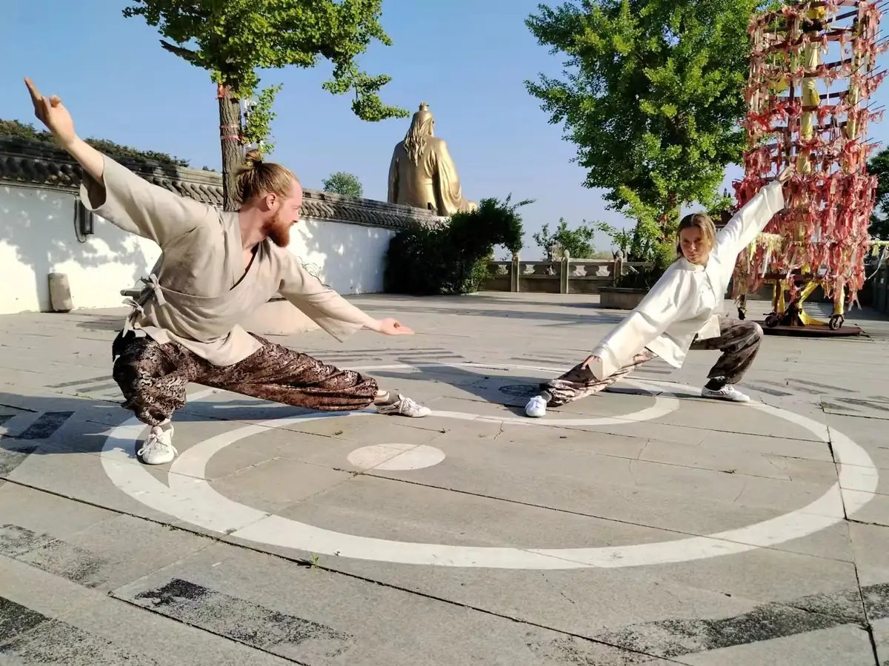
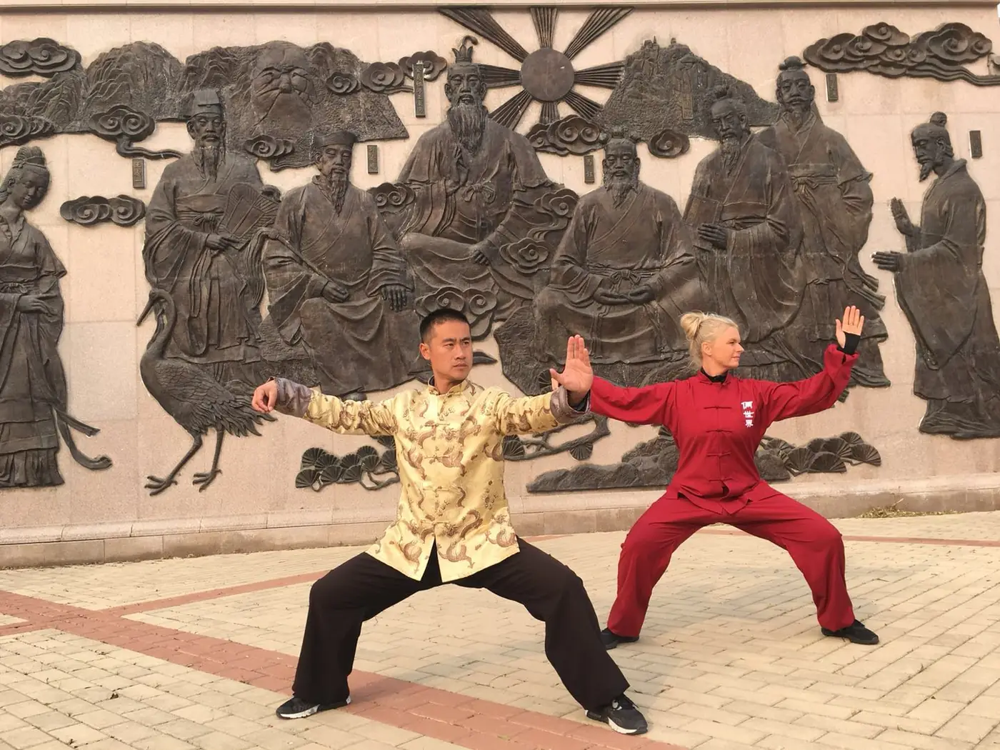
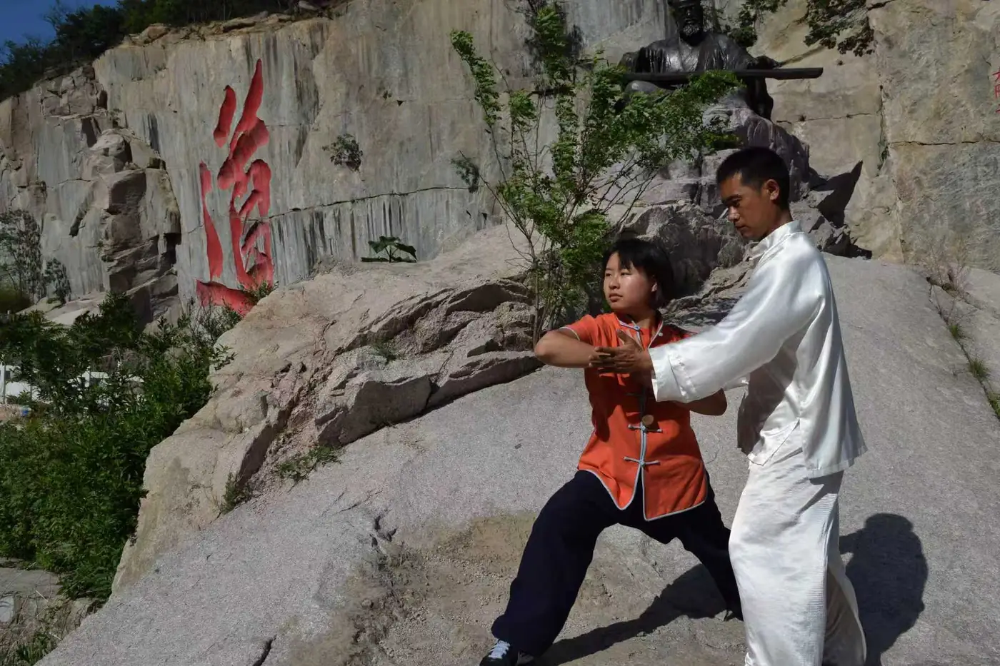
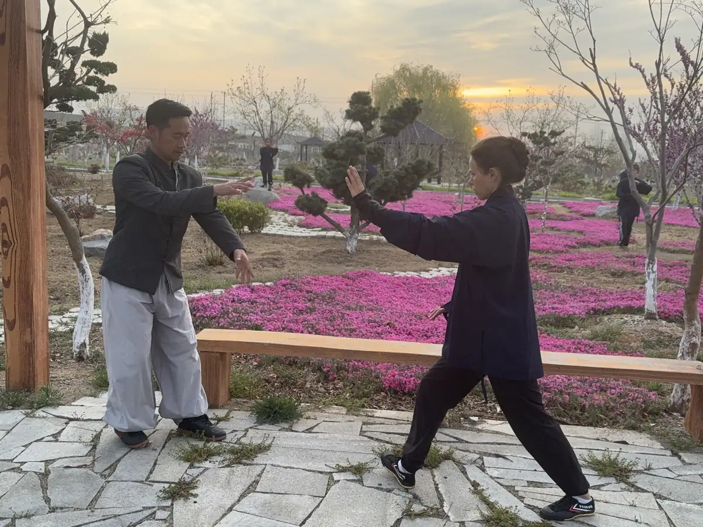
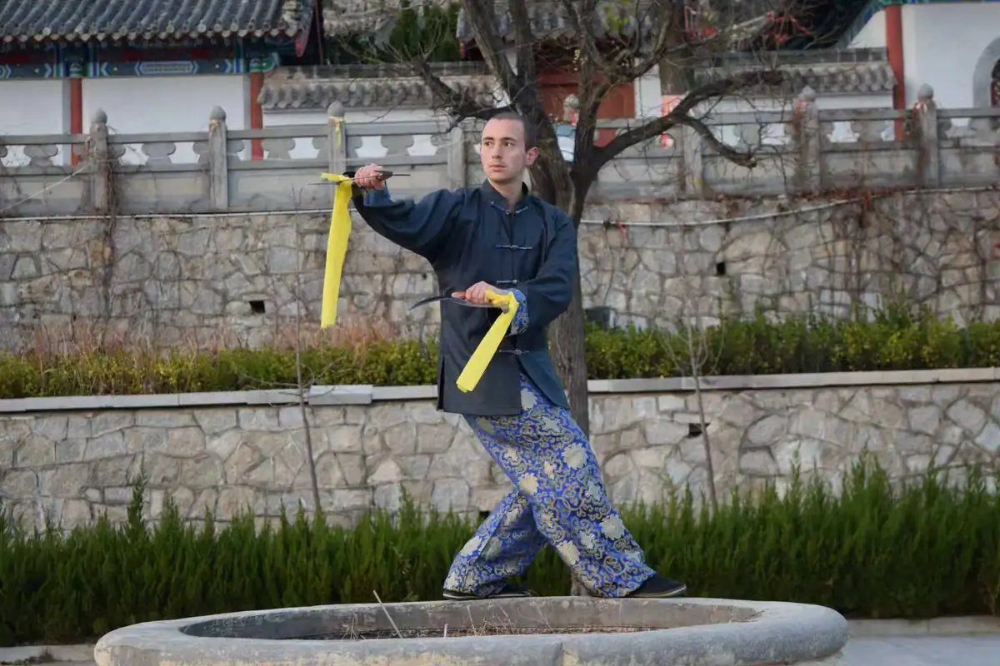

Residential training, not casual classes
Weihai Kung Fu Academy is a residential training environment where students live on-site and train daily. The focus is on consistent practice, structured development, and long-term progress rather than short visits or casual classes.
Live on-site
Students stay at the academy and train in a focused environment away from everyday distractions.
Train every day
Programs are built around consistent daily practice rather than occasional drop-in lessons.
Learn through immersion
Training, meals, environment, and routine all support deeper progress.

Traditional Chinese martial arts taught with structure and depth
Training combines internal and external Chinese martial arts, with a structured approach to forms, applications, conditioning, and internal development.
Kung Fu
Traditional forms, applications, conditioning, and discipline taught through daily practice.
Tai Chi
Internal training focused on structure, balance, sensitivity, calmness, and long-term development.
Qigong
Breath, energy circulation, internal awareness, and practices used to support health, recovery, and longevity.
Traditional health practices
Students are introduced to Chinese approaches to health, internal balance, and the relationship between breath, body, and mind.
All levels welcome
Beginners can start from zero, while experienced practitioners can deepen skill through immersive daily training.
Small-scale, personal, and serious about progress
The academy keeps student numbers low to preserve a focused training environment where discipline, consistency, and personal development come first.
Small group training
Fewer students means more individual attention and less distraction.
Serious atmosphere
Training is approached with intent, not as entertainment.
Long-term mindset
Students are encouraged to build skill steadily rather than chase quick results.

Learn directly from an experienced traditional master
Students train directly under an experienced teacher rather than through assistants or large rotating classes. This allows for precise correction, consistent guidance, and real technical development over time.
Direct correction
Every movement is observed and corrected in real time, helping students avoid building bad habits.
Structured progression
Training follows a clear path, with each stage building on the last.
Real accountability
Progress is expected, not optional, and students are guided to meet that standard.

Training, accommodation, meals, and mountain environment in one package
Students live and train on-site with accommodation, meals, and a daily routine designed to support focused training and steady development.
Arrive and settle in
Students move into a warm, welcoming academy environment and begin adapting to the rhythm of residential training.
Train the body and mind
Each day combines physical practice, internal work, and disciplined routine designed to build skill, focus, and resilience.
Transform through consistency
Over time, students develop strength, technical skill, internal awareness, confidence, and a deeper connection between body and mind.

What students say after training at the academy
These experiences give a clearer picture of what training here actually feels like: demanding, personal, welcoming, and often deeply transformative.
Martijn, Belgium
I came with the idea of training Kung Fu in China, but what I found was much more than that. The daily routine, the environment, and the level of teaching pushed me further than I expected.
Raúl Gutiérrez, USA
I have trained martial arts for years, but the consistency and structure here made a real difference. Training every day in this kind of environment changes how you approach practice.
Long-term student
After staying for over two years, this place became a second home. The teachers, the training, and the atmosphere create something that is hard to leave behind.

Clear guidance on cost, payment, and visas
Serious students usually want the practical side explained clearly. The school can guide students on visas, explain the fee structure, and provide the documents needed for the application process.
Visa support
The school provides invitation and accommodation documents and helps students understand which visa type may be appropriate.
Fee structure
Training costs depend on how long you stay, with discounts for longer commitments and advance payment.
Easy payment on arrival
For many students, the easiest way to pay is at the school using WeChat Pay, Alipay, or cash.